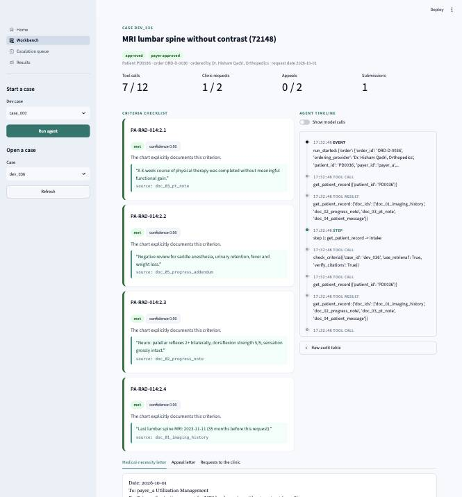

An AI agent that owns prior authorization from the physician's order to the payer's decision, and stops for exactly one human approval.
Checks the chart against every payer policy clause, with cited evidence.
Requests missing documents from the clinic and tracks them until they arrive.
Drafts evidence-based letters and appeals and follows up until a decision.
The model picks the next tool from a compact case state; code decides which tools are allowed, validates every output, enforces caps and logs everything.
Every 'met' cites text that code confirms is copied word for word from the chart.
Bound to the exact letter. Any edit voids it. The agent cannot approve itself.
Unclear or low-confidence criteria go to a person with a summary.
Statements kept only if quotes are verbatim and every number is in them.
Retries, model fallback, retry queue, idempotent submissions.
Every tool call, model call, decision and human action, append-only.

100 synthetic cases; 40 sealed with wording never seen in development.
Single prompt, keyword rules; no retrieval, citations, gap or appeal loop.
Policy threshold change, reworded policy, noisy chart, removed evidence, unseen procedure.
Payer down, corrupted model output and empty retrieval on every case.
Three runs per case, bootstrap confidence intervals, coverage vs accuracy.
Every run is saved with seeds, model and prompt; any drop fails the build.
| Metric | Result | Target | Status |
|---|---|---|---|
| Criteria-match accuracy | 99.2% (97.9% to 100.0%) | 90.0% | meets |
| Final decision accuracy | 96.7% (91.7% to 100.0%) | 90.0% | meets |
| Citation validity | 100.0% | 100.0% | meets |
| Missing-evidence detection (gap recall) | 94.9% (86.8% to 100.0%) | 85.0% | meets |
| Denial recovery | 60.0% | 70.0% | below |
| Robustness drop (worst perturbation) | 20.8 points | 5 points or less | below |
dev split, 3 runs per case, model stub-heuristic-v1, prompt p3.0, seeds 1001/4004, 2026-10-30T19:09:24+00:00
| Variant | Criterion acc | Final outcome acc | Denial recovery | Tokens per case |
|---|---|---|---|---|
| agent | 99.2% | 96.7% | 60.0% | 5,093 |
| single prompt | 99.2% | - | - | 1,416 |
| keyword | 88.8% | - | - | 0 |
| no retrieval | 99.2% | 96.7% | 60.0% | 7,653 |
| no gap loop | 99.2% | 80.0% | 60.0% | 4,092 |
| no appeal loop | 99.2% | 91.7% | 0.0% | 4,950 |
| Perturbation | Criterion acc | Drop (points) |
|---|---|---|
| threshold 6 to 8 weeks | 100.0% | 0.0 |
| reworded policy | 78.3% | 20.8 |
| noisy chart | 99.2% | 0.0 |
| removed evidence | 100.0% | 0.0 |
| unseen procedure | 0.0% | - |
| Injected fault | Runs | Safe |
|---|---|---|
| payer down | 60 | 100.0% |
| corrupted output | 60 | 100.0% |
| empty retrieval | 60 | 100.0% |
make setup, make demo, make eval, make test; verified from a clean cloneOne clinic, de-identified data, PDPL and HIPAA-style compliance review.
FHIR records, NPHIES-aligned submissions, real fax and email behind the gate.
More procedures and payers, policy-change monitoring, Arabic clinical notes.
AuthPilot: the agent does the reading, checking, chasing and drafting. A person approves in one click.